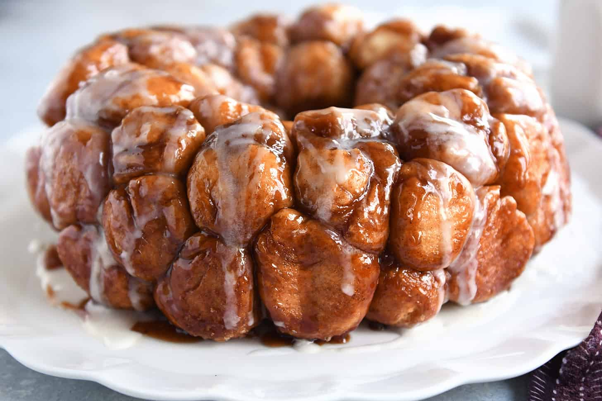

Monkey Bread
Return to Home

Description
This dessert consists of many bits of premade biscuit that are covered in a mixture of brown sugar, butter, and cinnamon. You eat it by pulling off chunks from the main body, making it a fun experience and a delicious treat!
Ingredients
- 4 cans of 10 biscuits each
- 1 tablespoon of cinnamon
- 1 1/2 cups of brown sugar
- 1 1/2 sticks of butter
- Optional: 1/2 cup chopped pecans or raisins
Steps
- Preheat oven to 350 F.
- Cut biscuits into fourths and coat with sugat and cinnamon mixture.
- In saucepan, melt 1 1/2 sticks butter, 1 1/2 cups brown sugar, and 1 tablespoon cinnamon.
- Place 1/2 biscuits in greased Bundt pan.
- Add 1/2 cup chopped pecans or raisins.
- Pour half of the melted liquid over this.
- Repeat with remaining ingredients and bake for 35-40 minutes at 350 F.